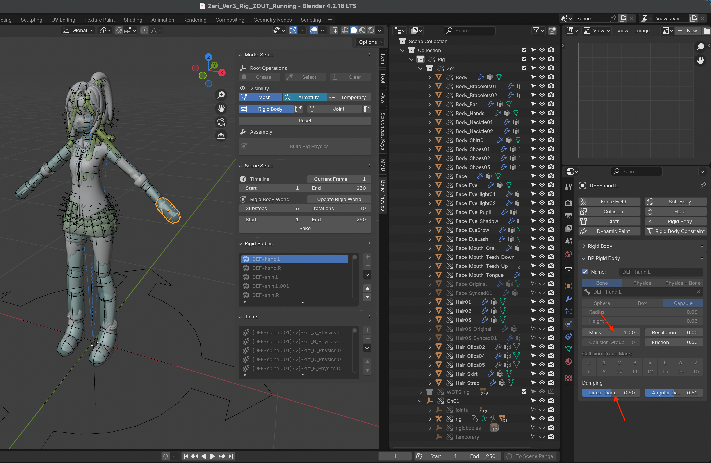

Link & Library Overrides
In Blender, Linking is a powerful feature that allows you to reuse assets across multiple projects without duplicating them. When you link an object or collection from an external .blend file, it remains read-only in the current project. To make changes, you need to create a Library Override, which generates a local editable copy of the linked data.
This workflow is especially useful for large projects and team collaboration, as it allows multiple scenes to share the same assets while keeping authoritative changes centralized in the source file.
However, managing linked armatures, overrides, and their associated physics setups can become complex— particularly for character rigs with many rigid bodies and constraints.
To simplify this process, the add-on uses a Root Empty as the single parent object for all auxiliary objects, making linking and library overrides more predictable and robust.
Link
When linking a character rig that uses this add-on, you only need to link one collection—the collection that contains the Root Empty.
In practice, character rigs are typically linked from a rig file into an animation file.
Use , navigate to the .blend file that contains the rig,
and select the collection that includes the Root Empty.

Library Overrides
After linking the collection, create a Library Override for it. Use . Blender will generate local override data for all override-compatible objects in the collection.
Due to internal limitations of Blender’s override system, it may be necessary to perform the override operation twice to ensure that all nested objects (such as rigid bodies, constraints, and helper objects) are fully and correctly overridden. This behavior is a known Blender issue and not specific to this add-on.

Important
After creating Library Overrides, you must run Update Rigid World.
When objects are linked or overridden, rigid bodies and constraints may still reference data from the original source file or outdated object instances. The Update Rigid World operation rebuilds internal references so that:
All rigid bodies are registered in the current scene’s Rigid Body World
All constraints correctly reference the overridden (local) objects
Duplicate or invalid physics objects caused by overrides are removed
If this step is skipped, the physics simulation may fail to evaluate correctly or appear to do nothing in the animation file.
Overridable Properties
Due to Blender’s Library Override design, some properties cannot be edited locally and must be changed in the source file.
In addition, this add-on intentionally locks certain properties from local editing to prevent accidental changes to critical physics settings that could destabilize the simulation.
Non-overridable properties appear grayed out in the Properties Panel.

If you need to modify these properties:
Open the source (rig) file
Make the changes there
Save the file
Reload the overrides in the animation file, or run Update Rigid World to apply the changes
Warning
When adjusting overridable properties during animation—such as rigid body mass or joint angle limits—always save your file first.
Although these properties are technically overridable, changing them during active physics evaluation may cause Blender to crash due to instability in the physics solver.